recreating Distill's Growing Neural Cellular Automata for the computer club website
can a tiny neural cellular automaton grow the computer club club logo from a single seed cell, then keep it alive and repair it in the browser?
treat this page is a lab notebook. I made some creative tweaks to the original but refer to the paper for the original intuition behind these models.
Growing Neural Cellular Automata (Mordvintsev, Randazzo, Niklasson, Levin; Distill, 2020) is the paper that replaces the handwritten rule with a trainable one and shows emoji growing, persisting, and regenerating. I implement a very similar model for the club logo each cell is a 16-d vector. perception is the fixed 3×3 Sobel stack; a tiny MLP proposes a state delta; stochastic per-cell updates (fire rate 0.5) and an alpha-based living mask.
three parts to their method:
we will follow their experiments closely but you will see some parts where we must diverge
a cellular automaton is a grid of cells. each discrete time step, every cell looks at just its neighborhood, applies the update rule, and transfers to a new state. no cell talks to distant cells directly; all patterns come from simple rules
in the classic kind, rules are hand written. Conway's Game of Life is the most famous example: a live cell survives with 2–3 live neighbors; a dead cell births with exactly 3. the rules are simple yet they produce complex structures
growing neural CA keeps the spirit but changes the rules. instead of boolean logic each cell runs a tiny neural network to decide its state. training finds the weights so that this network will produce a certain pattern.
we will roughly copy Distill here, making some tweaks to accomodate my desktop 1660ti
| channels / hidden | 16 / 128 |
| CA steps | 64–96 |
| fire rate | 0.5 |
| optimizer | Adam, betas (0.5, 0.5) |
| LR | 2e-3 → 2e-4 after milestone |
| grad handling | per-param L2 normalize |
| loss | pixel L2 (optional L1 / text-boost) |
| seed | opaque COM (prefer non-red) |
every grid cell holds a 16-vector: RGBA plus hidden state. each step, all cells run the same small network: 3×3 perception (identity + Sobel), 128-d ReLU hidden layer, 16-d delta. stochastic fire rate 0.5 and an alpha-based alive mask.
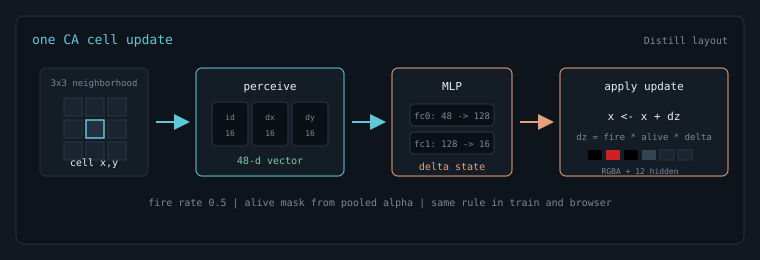
training unrolls the CA for a random number of steps (64–96 at emoji scale; 80–112 for my HD targets), compares rendered RGBA to a target image, backprops through the unroll, and normalizes each parameter gradient to unit L2 norm (Distill uses this trick for stability). persistent and regenerating experiments add a sample pool and optional circular damage.
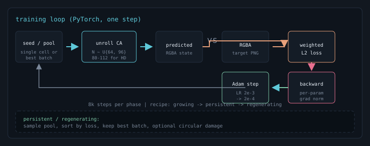
inference loads the same weights (uint8 quantized for WebGL), places one seed cell,
and keeps calling step().
I stayed close to Distill: 16 channels, 128 hidden, fire rate 0.5, Adam with betas (0.5, 0.5), per-parameter grad L2 normalize LR 2e-3 then dropping by a power of ten after a few thousand steps.
perception = concat(identity, sobel_x, sobel_y) # 48-d hidden = relu(perception @ W1 + b1) # 128 delta = hidden @ W2 + b2 # 16 alive = maxpool(alpha) > 0.1 update = state + fire_mask * alive * delta
| model size | ||
|---|---|---|
| artifact | bytes | notes |
| learned scalars | 8,320 | fc0 6,144 + bias 128; fc1 2,048 |
| float32 weights | 33,280 | 8,320 × 4 B |
| model.pth | 34,886 | PyTorch checkpoint on disk |
| WebGL JSON | 11,521 | uint8-quantized bundle for the browser |
| decoded payload | 8,336 | weight bytes after base64 decode |
| compute per phase (MAC = Multiply Accumulate) | ||
|---|---|---|
| phase | MACs | notes |
| one CA step | 43.2M | 4,960 cells on 80×62 grid |
| ↳ perception | 2.1M | three grouped 3×3 Sobel convs |
| ↳ MLP | 40.6M | 48→128→16 per cell |
| ↳ life + fire gate | ~0.4M | maxpool mask, stochastic update |
| inference unroll | 3.5B | 80 steps, batch 1, seed → logo |
| live demo frame | 86M | 2 CA steps per animation frame |
| training forward | 28B | batch 8 × ~80 CA steps |
| training total | 84B | forward + backward through unroll (~3×) |
the following are just a few neat outputs, we saw a variety of failures all to be discussed in the next sections.
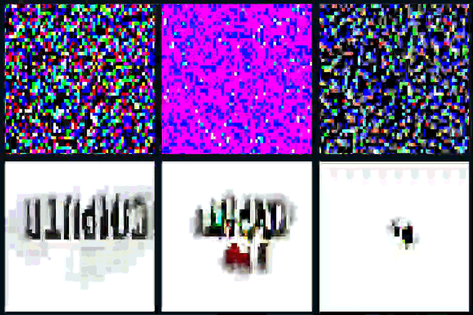
my first instinct was to dump the logo into the trainer and wait. if only it was that easy... the target was too big for a 64–96 step unroll. MSE loved the red heart and treated the thin black letters as optional. the gaps were feeling so impossible to close we introduced a manual white gap
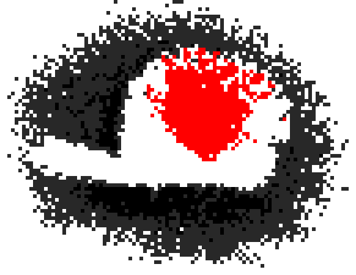
clearly we needed to think a little harder about this.
I should not have wasted a single GPU FLOP before doing this... I cut down to a 48×30 two-line badge and instantly fixed the "cannot finish growing" problem. the heart locked in by step ~500 and the word spent thousands of steps as a smear. the issue was that loss looked great but the logo looked terrible.
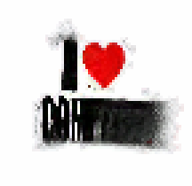
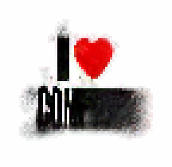
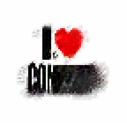
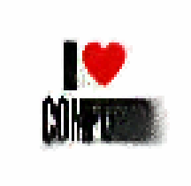
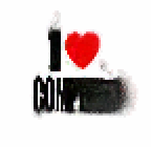
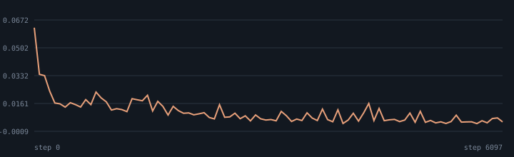
clearly it was pretty easy to grow a heart and pretty hard to grow a word. this led me to try to split the problem. grow a CA on just the word at low resolution (56×16, grid 88×48). once the letters were crisp and consistent, I would resume those weights onto the full logo.
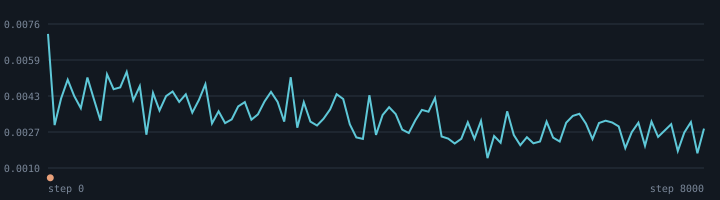
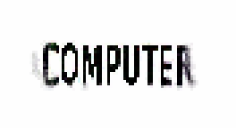
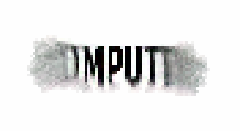
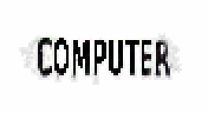
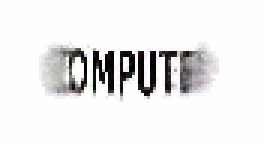
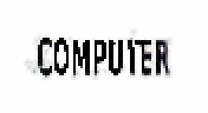
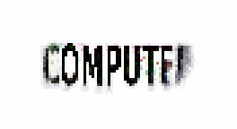
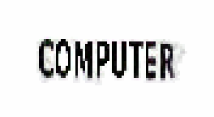
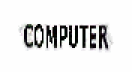
below are five independent growths from the same seed (80 CA steps, fire 0.5) they all look good so I trust it enough to move on.
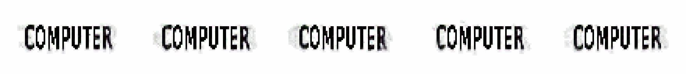
NOTE: we actually split this training into generate, stability, and regenerate phases, each is subltly different and I reccomend reading the original paper for the intuition behind each phase.
we now added the new learned weights back to one of our original models and resumed training with higher weight given to pixels representing letters (setted on 6x weight).
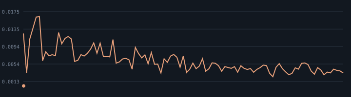
once the small logo worked, I ran the same ladder at higher res: HD word (72×20 on grid 104×52), then HD badge (64×40 on grid 96×72) this is still a work in progress, the challenge on convergence is harder and harder as we try for a bigger more complex pattern
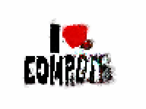
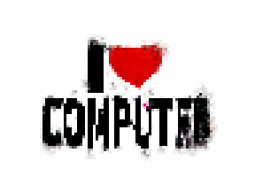
I set out to make a cool landing page demo for computer club and I think I did.
this was much harder than I anticipated it would be, I typically architect and train my own models rather than copying researchers but this was a fun and interesting process and I learned a considerable ammount.
I will continue trying to train a higher fidelity version of the logo for use on the site but for now, my lab notes are complete. I will revise if needed.